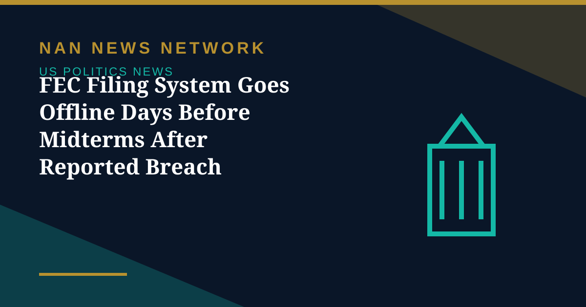

FEC Filing System Goes Offline Days Before Midterms After Reported Breach Attempt

The Federal Election Commission's electronic filing system went offline less than a week before the November 3 midterm elections, after what an internal agency email described as a bad actor attempting to breach its systems. The outage has disrupted mandatory campaign finance disclosures at one of the most sensitive moments of the election calendar.
What went down
According to reports, the agency began investigating outages on Monday evening, and its electronic filing system and its FEC Notify alert service were both unavailable. An email sent to at least one political committee stated plainly that electronic reports could not be submitted at the time. An FEC spokesperson said IT staff were actively working to restore service, and by Tuesday evening reports said the issue had been identified and a fix was being implemented, though the system remained offline.
What the outage does not affect
Democratic FEC Commissioner Dara Lindenbaum moved quickly to draw a line between the filing system and voting itself. She wrote that the outage has nothing to do with voter files or voter registration, which are maintained by the states, adding that the FEC only handles federal campaign finance filings. Voting on November 3 is unaffected.
The timing, however, is awkward. The final days before an election are when committees file some of their most closely watched disclosures, and a filing blackout leaves journalists, watchdogs and rival campaigns temporarily unable to see who is raising and spending what. Until the system returns, the money trail of the campaign's closing stretch stays partly in the dark.
Sources: Federal Election Commission status updates, reports by Anadolu Agency and ET Now, October 28, 2026
More on US Politics News
- Trump Says He Will Respect Midterm Results 'If They're Honest'
- Polls Give Democrats the Edge One Week Before the 2026 Midterms
- Federal Judge Hears Trump Administration Bid Over California Ballots
- Midterm Early Voting Nears 27 Million Ballots, Running Ahead of the 2022 Pace
- Trump Rallies in Port Huron, Defends Iran Stance and Repeats $5,000 Check Pledge
- Midterm Early Voting Is Underway Across America Ahead of November 3
- Trump Approval Falls to a Record-Low 31% in Reuters/Ipsos Poll as Midterms Near
- FBI Investigating Suspicious Letters Sent to Three Arizona Democrats